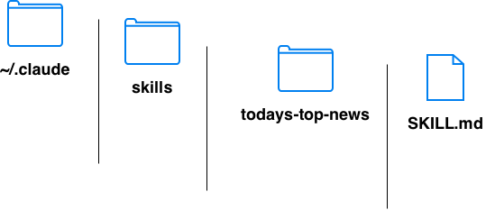

# install claude code
curl -fsSL https://claude.ai/install.sh | bash
source ~/.zshrc
# verify installation
claude --version
# Clone a project from GitLab with personal token
# Start claude code in the project folder
claude
# Use claude code to update code
# Let claude code push code to GitLab
# Be able to read from repo, push to repo, create merge request, merge branch

# SKILL.md
---
name: todays-top-news
description: Use this skill when the user asks to explore today's top news, summarize major current events, compare headlines across sources, or produce a daily news briefing.
---
# Today's Top News Skill
Use this skill to explore and summarize today's top news in a careful, source-grounded way.
## Goal
Produce a concise but useful daily news briefing that identifies the most important stories, explains why they matter, and separates confirmed facts from early/uncertain reporting.
## Default output format
Unless the user asks for something else, structure the answer as:
1. **Top stories**
- 5 to 8 major stories
- Each story should include:
- headline-style title
- 2 to 4 sentence summary
- why it matters
- source links/citations when available
2. **What changed since yesterday**
- Highlight new developments, not just background.
3. **Markets / economy**
- Include only if relevant or if major market-moving news exists.
4. **Tech / AI**
- Include OpenAI, AI, chips, cybersecurity, software, data, or major tech business news when relevant.
5. **Geopolitics / policy**
- Include major international, U.S. policy, election, war, or legal developments.
6. **Watch next**
- List 3 to 5 things likely to develop later today or this week.
## Source rules
- Always use current sources for today's news.
- Prefer primary or highly reputable sources:
- AP
- Reuters
- BBC
- NPR
- Financial Times
- Wall Street Journal
- New York Times
- Washington Post
- official government/company sources
- official court filings or press releases
- Use multiple sources for major or fast-moving stories.
- Avoid relying only on social media posts.
- Clearly label unconfirmed or developing information.
## Recency rules
- Treat “today” using the user's local date and timezone when known.
- Prioritize stories published or materially updated today.
- If a story began earlier but has a new development today, explain the new development first.
- Do not present old background as if it is new.
## Verification checklist
Before finalizing:
- Check whether the event happened today, was reported today, or was merely re-reported today.
- Compare at least two sources for major breaking stories.
- Look for official statements when the story involves government, companies, courts, public safety, markets, or war.
- Avoid overconfident language when facts are incomplete.
- Include exact dates for clarity.
## User preference handling
If the user asks for a specific region or topic, prioritize that scope.
Examples:
- “today's top AI news” → focus on AI and tech.
- “top market news” → focus on stocks, rates, earnings, macro, deals.
- “top news in China” → focus on China and regional sources.
- “quick version” → 3 to 5 bullets only.
- “deep version” → include more context, background, and implications.
## Suggested prompt to use this skill
The user may say:
- `Use $todays-top-news to brief me on today's top news.`
- `Use $todays-top-news for top AI and market news today.`
- `Use $todays-top-news and focus on U.S., China, markets, and AI.`
## Tone
Be concise, neutral, and factual.
Do not sensationalize.
Do not bury the lead.
# use skills
Use $todays-top-news to brief me on today's top news.
# place CLAUDE.md to project folder
# CLAUDE.md
## Rules
- Do not change generated files.
- Ask before adding new dependencies.
- Keep changes small and focused.
- Do not run destructive git commands.
- Follow existing code style.
## Commands
- Run tests with: `pytest`
- Run lint with: `ruff check .`
- Start app with: `npm run dev`
## Before finishing
- Run relevant tests.
- Explain what files changed.
- Mention anything not tested.
# start ollama
ollama serve
# set environment variables
export ANTHROPIC_BASE_URL="http://localhost:11434"
export ANTHROPIC_AUTH_TOKEN="ollama"
export ANTHROPIC_MODEL="gemma4:latest"
# start claude code
claude
# unset environment variables and use anthropic models
unset ANTHROPIC_BASE_URL
unset ANTHROPIC_AUTH_TOKEN
unset ANTHROPIC_MODEL
/help Show help and available commands
/model Switch or inspect the current Claude model
/clear Clear the current conversation/context
/compact Summarize/compact the current context to save tokens
/context Show context usage
/init Generate or update project instructions, usually CLAUDE.md
/permissions Manage what Claude Code is allowed to do
/config View or change Claude Code settings
/doctor Diagnose Claude Code setup issues
/cost Show usage/cost information
/status Show current session/account/project status
/login Sign in to Claude
/logout Sign out
/exit Exit
/bug Report a bug
/review Ask Claude to review code/changes
/memory Manage memory/context files
/agents Manage or use subagents, if supported in your version
/mcp Manage MCP server connections, if configured